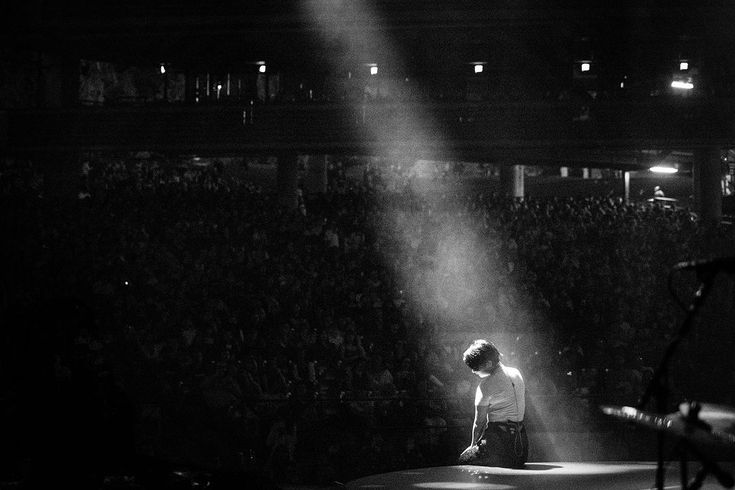
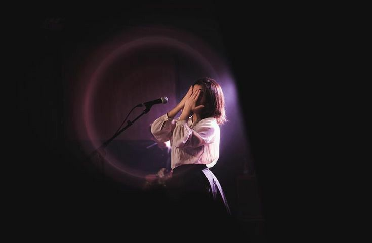
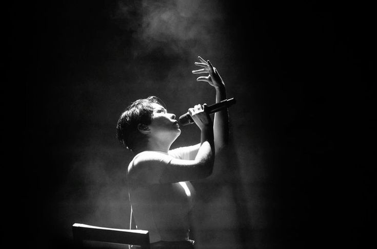

Welcome to Mitski Fan Page!

Album Terbaru: The Land Is Inhospitable and So Are We (2024)
The Land Is Inhospitable and So Are We adalah album studio ketujuh oleh musisi indie rock asal Amerika Serikat, Mitski. Album ini dirilis pada 15 September 2023 melalui label Dead Oceans, dan menandai kembalinya Mitski setelah jeda perilisan pasca album Laurel Hell (2022). Album ini merupakan sebuah karya konseptual yang berfokus pada tema kesepian, cinta, iman, keterasingan, dan hubungan manusia dengan dirinya sendiri serta dengan dunia di sekitarnya. Judul album mencerminkan pandangan reflektif Mitski terhadap kehidupan modern, di mana lingkungan yang keras sering kali beriringan dengan emosi manusia yang rapuh dan penuh kontradiksi. Secara musikal, The Land Is Inhospitable and So Are We menampilkan pendekatan yang lebih minimalis dan organik dibandingkan karya-karya Mitski sebelumnya. Album ini banyak menggunakan instrumen akustik, aransemen string, serta elemen paduan suara yang terinspirasi dari musik gospel dan folk, menciptakan suasana hangat namun melankolis. Genre yang dihadirkan mencakup indie rock, folk, chamber pop, dan sentuhan musik gospel. Lagu pembuka album, "Bug Like an Angel", berfungsi sebagai pengantar emosional terhadap keseluruhan narasi album, menggambarkan pergulatan batin, rasa bersalah, serta pencarian makna dan pengampunan. Sepanjang album, Mitski menggunakan lirik yang puitis dan simbolis untuk mengeksplorasi dinamika cinta, kerinduan, serta batasan antara harapan dan keputusasaan. Album ini diproduksi oleh Mitski bersama Patrick Hyland, yang juga merupakan kolaborator lama dalam proses kreatifnya. Saat dirilis, album ini menerima tanggapan yang sangat positif dari para kritikus musik, yang memuji kedewasaan emosional, konsistensi konsep, serta keberanian Mitski dalam menyederhanakan aransemen tanpa mengurangi kedalaman makna. Secara komersial, The Land Is Inhospitable and So Are We berhasil menempati posisi puncak di berbagai tangga album internasional, termasuk debut di peringkat pertama di beberapa negara. Album ini dianggap sebagai salah satu karya paling intim dan reflektif dalam diskografi Mitski, serta memperkuat posisinya sebagai salah satu penulis lagu paling berpengaruh di musik alternatif kontemporer.
Cuplikan Konser
  Lihat gallery album Mitski selengkapnya di halaman Gallery »
Berita Terbaru
- September 2023: Mitski merilis album terbarunya The Land Is Inhospitable and So Are We yang mendapat sambutan hangat dari kritikus musik internasional.
- Oktober 2023: Mitski memulai rangkaian tur konser untuk mendukung album tersebut di Amerika Utara dan Eropa.
Ingin tahu lebih banyak tentang sejarah Mitski?
Kunjungi halaman ABOUT US
untuk mengenal Mitski lebih dalam!